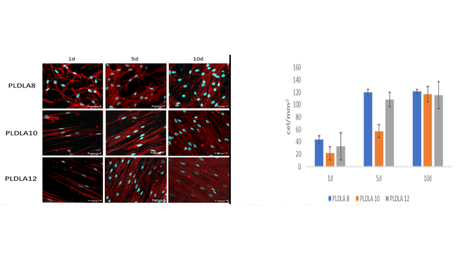

1
2
3
4
Membrana Eletrofiada
A membrana eletrofiada da DBM traz como inovação a biorreabsorção, biocompatibilidade e atoxicidade, além de mimetizar a matriz dérmica proporcionando a sua regeneração de forma mais acentuada promovendo a proteção contra infecções.
A morfologia microscópica da membrana, tem a sua forma macroscópica como uma manta flexível com uma textura suave ao toque.
Ensaios in vitro para com a utilização da membrana com células-tronco mesenquimais de tecido adiposo (hASC), demonstram que após 10 dias, todas as membranas eletrofiadas apresentaram praticamente a mesma quantidade de células/mm², indicando viabilidade celular, pois a membrana permite o crescimento das células sobre o biomaterial.
A DBM comprova com evidências que essa tecnologia auxilia na regeneração do tecido e que é um diferencial para o mercado biomédico, além de promover barreira, promove o crescimento celular para acelerar o processo de regeneração dérmica.
A DBM Detém o conhecimento total da cadeia produtiva, desde a síntese do polímero, fabricação da máquina e produção da membrana eletrofiada. O termo eletrofiação vem da junção de “eletro” que se refere à diferença de potencial elétrico e “fiação” que significa conjunto de fios, como resultado são produzidas membranas com fibras na ordem de nanômetros (entre 50 e 500nm).
Evidência de Regeneração de Tecido

Células-tronco mesenquimais de tecido adiposo (hASC) cultivadas nos curativos com diferentes concentrações após 1, 5 e 10 dias. Representação gráfica da contagem das células cultivadas nas membranas após 1, 5 e 10 dias.
Para a produção das membranas pela técnica da eletrofiação, a DBM dispõe de desenvolvimento próprio de máquinas e dispositivos que possibilitam o incremento de novas pesquisas e geração de novas tecnologias aplicadas no campo médico.
A forma geométrica e morfológica das membranas pode variar, dependendo do campo elétrico gerado, a composição da solução, sua viscosidade e massa específica (DOSHI e RENEKER, 1995).
Na área médica, especificamente na engenharia de tecidos, o desenvolvimento de materiais biocompatíveis e com culturas de crescimento celular demostram promissores avanços tecnológicos sendo possível serem utilizadas na substituição de tecidos ou órgãos em seres vivos.
A matriz extracelular natural é composta em sua maioria por colágeno, com diâmetros de aproximadamente 50-500 nm, capazes de suportar a migração e a proliferação de células bem como a diferenciação específica de tecido, sendo que materiais fibrosos possuem a capacidade de imitar essa matriz (ZHANG et al. 2012).
Estas membranas eletrofiadas oportunizam taxas avançadas de crescimento celular, ocasionando o abreviamento do período de recuperação do paciente, reduzindo os níveis de rejeição do implante e minimizando os problemas de infecções, por conta das suas características específicas.